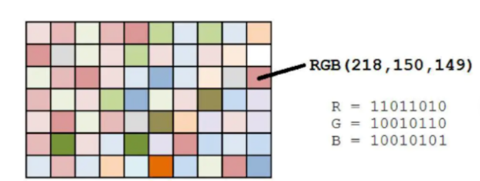
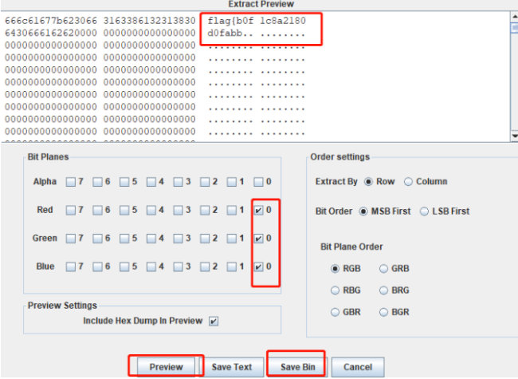

PNG 隐写术¶
对于PNG来说，隐写术有很多很多，比如我们前面所讲的一个高宽问题，针对于这种我们只需要修改高宽就可以解决，但是后面也有很多更复杂的隐写术。
LSB隐写¶
LSB(Least Significant Bit) 隐写 是一种常见的信息隐藏技术，主要用于在图像中嵌入秘密信息。它通过修改图像像素的最低有效位来实现信息的隐藏，而这种修改对人眼几乎不可察觉。
原理¶
图片中的像素一般都是由RGB三原色（红绿蓝）组成，每一种颜色占用8位，取值范围为0x00~0xFF，即有256中颜色，一共包含了256的3次方的颜色，即16777216中颜色。而人类的眼睛可以区分约1000万种不同的颜色，这就意味着人类的眼睛无法区分余下的颜色大约有6777216种。

LSB隐写就是修改RGB颜色分量的最低二进制位也就是最低有效位（LSB），而人类的眼睛不会注意到这前后的变化。
例如，十进制的235表示绿色，二进制为11101011。修改最低位后，颜色看起来依旧没有变化，但实际上已经嵌入了信息。
出题脚本如下：
from PIL import Image
def encode(image_path, secret_data, output_path):
image = Image.open(image_path)
pixels = list(image.getdata())
binary_secret = ''.join(format(ord(char), '08b') for char in secret_data)
binary_secret += '1111111111111110' # 结束标志
new_pixels = []
data_index = 0
for pixel in pixels:
new_pixel = list(pixel)
for i in range(3): # 对RGB三个通道进行修改
if data_index < len(binary_secret):
new_pixel[i] = (new_pixel[i] & ~1) | int(binary_secret[data_index])
data_index += 1
new_pixels.append(tuple(new_pixel))
new_image = Image.new(image.mode, image.size)
new_image.putdata(new_pixels)
new_image.save(output_path)
encode('input.png', 'Secret Message', 'output.png')
解题¶
针对解题，我们需要一个工具，StegSolve。
下载地址如下：
这个工具需要java环境，然后双击打开即可。如果下载之后出现的是一个压缩包的格式，这里给出两个解决方法。
方法1¶
右键 -> 打开方式 -> 选择程序 -> Java(TM) Platform binary -> 把"始终使用选择的程序打开这种文件"的勾打上。
方法2¶
首先Ctrl + R， 在窗口中输入regedit，打开注册表。
HKEY_CLASSES_ROOT\Applications\javaw.exe\shell\open\commandb，将注册表的值进行修改。
将数据的数值改为"D:\jdk1.8\bin\javaw.exe" -jar "%1"，其中javaw的地址为你本地的地址。
最后选择jar包打开方式，找到对应的jdk下面的javaw.exe打开即可。
回到正题。
使用stegsolve打开图片，按右方向键查看各通道显示的图像。
图像处理主要是analyse这个模块，主要有这四个功能：
-
File Format: 文件格式，查看图片的具体信息
-
Data Extract: 数据抽取，提取图片中隐藏数据
-
Frame Browser: 帧浏览器，主要是对GIF之类的动图进行分解，动图变成一张张图片
-
Image Combiner: 拼图，图片拼接
对于LSB隐写的图片，我们用StegSolve打开模块，由于是RGB三原色的最低位隐写，所以在Data Extract模，提取Red，Green，和Blue的0通道信息，在这三个颜色的0通道上打勾，并按下Preview键，当隐写的内容为文本文件时如下所示：

当隐写的内容为图片时如下所示：

由PNG文件头可以看出隐写内容为PNG文件，按save Bin键保存为PNG文件。
cloacked-pixel¶
这个本质上也是一个LSB的隐写，只不过加上了密码，工具链接如下：
区别如下：
- AES 加密层
from crypt import AESCipher # 导入AES加密模块
# 嵌入时
cipher = AESCipher(password)
data_enc = cipher.encrypt(data) # 先加密再嵌入
# 提取时
cipher = AESCipher(password)
data_dec = cipher.decrypt(data_out) # 先提取后解密
# 分解时添加4字节文件长度
fSize = len(data)
bytes = [ord(b) for b in struct.pack("i", fSize)] # 4字节int
bytes += [ord(b) for b in data] # 实际数据
# 组装时读取长度
payload_size = struct.unpack("i", bytes[:4])[0] # 读取头4字节
return bytes[4: payload_size + 4] # 按长度截取
普通的LSB通常只提取bit，而这个工具处理提取所有的bit，然后组装字节数据，AES解密，最后写入文件。
盲水印¶
工具链接：
原理¶
bwm.py/bwnforpy3.py实现的是一种**频域加性水印 + 随机置乱加密**的方案： 把水印先用伪随机方式“打散”，再把它作为扰动加到原图的频谱（FFT）里；提取时用“带水印图——原图”的频域差把扰动还原出来，再用同一把“随机钥匙”（seed）把水印拼回去。他的decode需要原图，所以严格说不是“盲提取” 的blind watermark，而是“不可见水印 + 需要原图的提取”。
水印是怎么“加密/打乱”的¶
在encode里，代码先做一个半高的画布hwm，然后把水印图wm复制到这个画布的左上角。
-
hwm = zeros((h*0.5, w, c)) -
hwm2 = copy(hwm) -
hwm2[i][j] = wm[i][j]（把水印贴进左上角）
接着用随机种子 seed 生成两个置乱序列（行序列 m、列序列 n），并 shuffle：
-
random.seed(seed) -
m = [0..hwm_h-1]打乱 -
n = [0..w-1]打乱
最后用这两个置乱序列做二维置乱，把“左上角那块水印”扩散到整个半高区域：
hwm[i][j] = hwm2[m[i]][n[j]]
直观理解：水印先被“贴”到角落，再被“按 seed 指定的乱序”重新排布，变成一张看起来像噪声的“加密水印”。
为什么要镜像到整张图¶
置乱后的hwm只有半张高，代码会把它写入一个与原图同尺寸的rwm，并且做中心对称镜像复制：
rwn[i][j] = hwm[i][j]rwn[H-i-1][W-j-1] = hwm[i][j]
这样rwm覆盖整张图，而且带有对称结构（这样也有助于后面FFT逆变化后取实部时更“稳定”）。
在频域里做加法嵌入（FFT）¶
核心嵌入就是两行：
f1 = fft2(img)（原图频谱）f2 = f1 + alpha * rwm（把加密水印当作频谱扰动叠加进去）img_wm = real(iff2(f2))（逆变换回图像，取实部保存）
这里的alpha的水印强度系数：越大越容易提取，但越可能引入肉眼可见失真；越小月隐蔽，但更脆弱。
提取（decode）为什么必须要原图¶
decode 做的是频域“差分还原”：
- 读入原图
img和带水印图img_wm f1 = fft(img),f2 = fft2(img_wm)rwm = real((f2 - f1) / alpha)——直接把当初加进去的扰动“减出来”
然后再用相同的seed生成同样的m,n，把置乱逆回去（把rwm的上半部分按m,n，放回正确的位置），最后再用对称性把另一半补齐，写出水印图。
IDAT块隐写¶
在正常的图片里，所有的数据都是写入IDAT块中的，且是按顺序依次进行填充的，也就是说，第一个IDAT块填满以后才会开启第二块，并且每个IDAT块都有独属于它自己的CRC。
那么这就会出现一个问题，可以通过伪造IDAT的CRC值进行编码，这是一个考点，也是一个出题点，这种会造成图片传输损坏，但是也会隐藏传输数据。
另外也会出现一种情况，一个完整图片，所有的IDAT块都是正常的，那么有没有可能去添加一个不属于这张图片的IDAT块呢？
答案是有可能的，我们可以构造一个IDAT块，里面隐藏要传输的信息，然后伪造一下IDAT的文件特征，插到最后一个IDAT块之后，IEND块之前，即可。
对于这种的隐写，我们怎么去提取呢？
第一可以使用binwalk去分解，binwalk可以分解不属于这个文件的信息，foremost不行。
第二我们可以在010editor中手动去分离，选择我们要去提取的IDAT块，然后选择保存即可。
自定义像素隐写¶
在比赛中我们都可以看到基本上都是一个题目携带一个脚本，对于PNG来说，自定义像素隐写也是可以的，出题人根据自己的思路，写脚本进行加密，我们需要对这个图片，写脚本进行解码即可。
练习题¶
题目地址：NO.0715 - LSB

- 题目名称：LSB
- 题目难度：1
- 题目ID：NO.0715
题目地址：NO.1075 - LSB？
- 题目名称：LSB？
- 题目难度：1
- 题目ID：NO.1075
题目地址：NO.1076 - BWM
- 题目名称：BWM
- 题目难度：1
- 题目ID：NO.1076